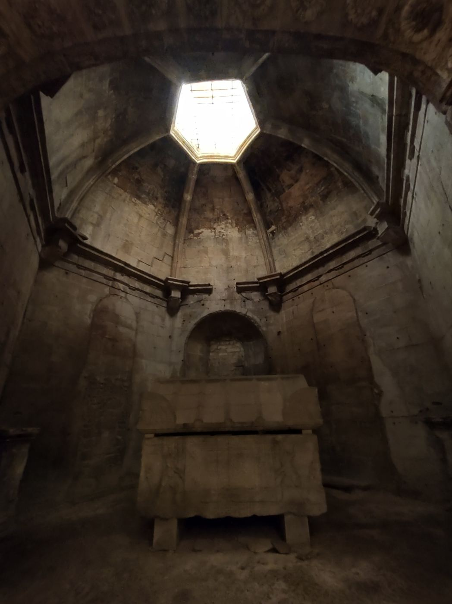

Tres cabezas
Al asomarte ves un perro gigantesco con tres cabezas, que ocupa casi toda la habitación. Bajo una de sus patas hay una trampilla. Sus seis ojos se abren y los tres hocicos gruñen a la vez.
Recuerdas la flauta que te regaló Hagrid.
¿Qué haces?
- Tocar la flauta
- Cerrar la puerta y huir a la torre de Gryffindor
- Retroceder y esconderte en un aula vacía